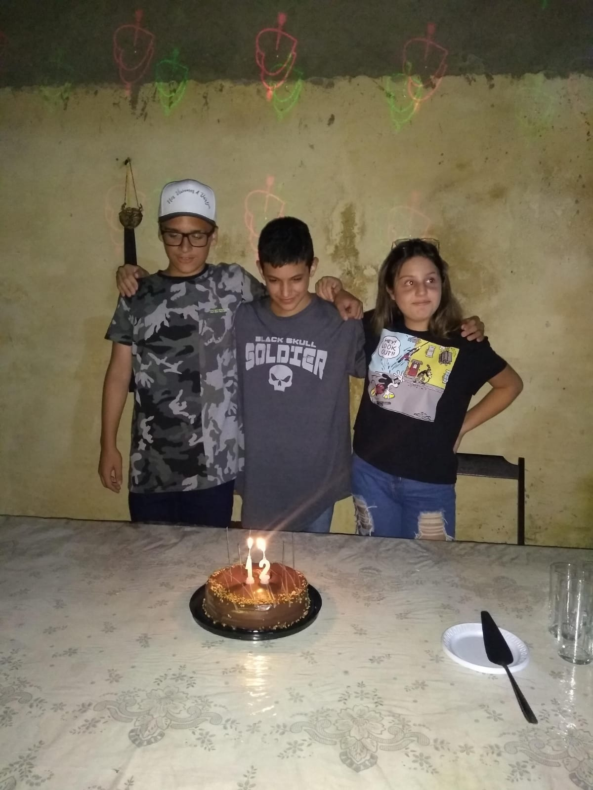
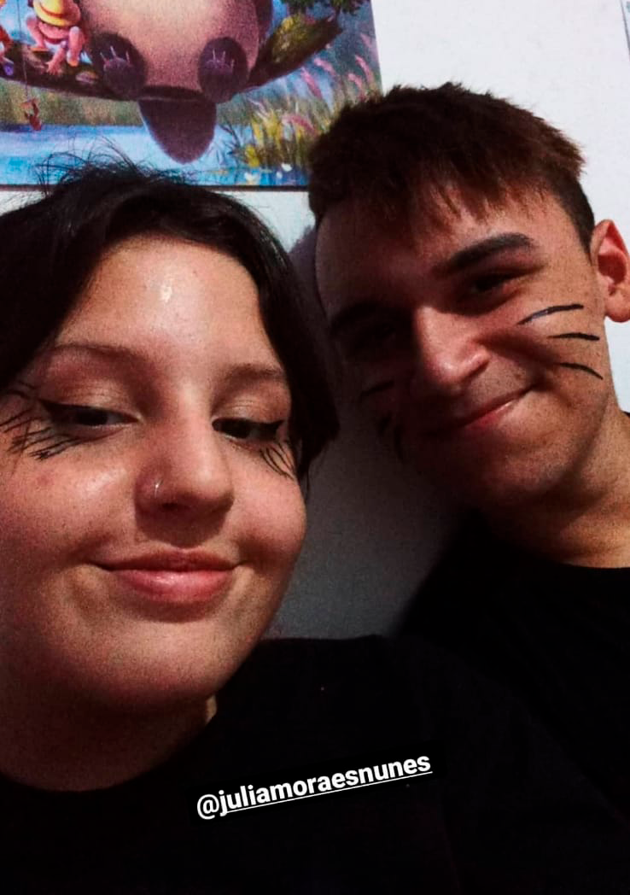
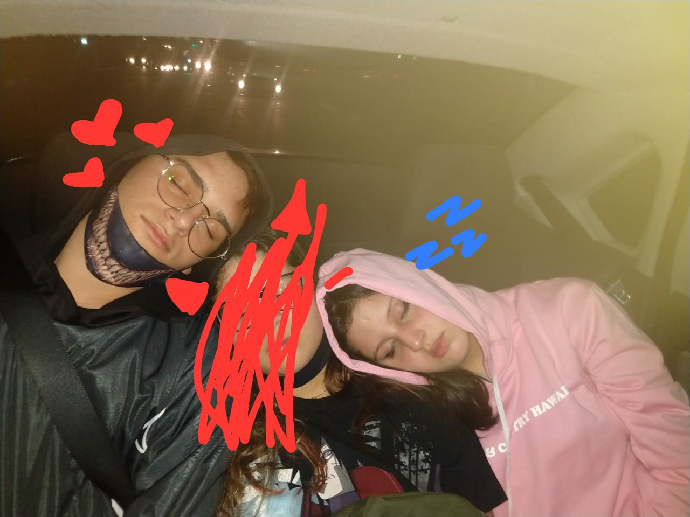
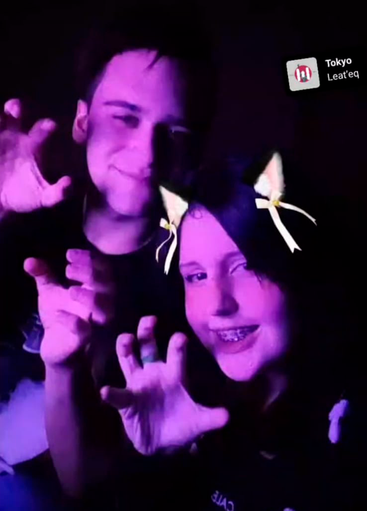
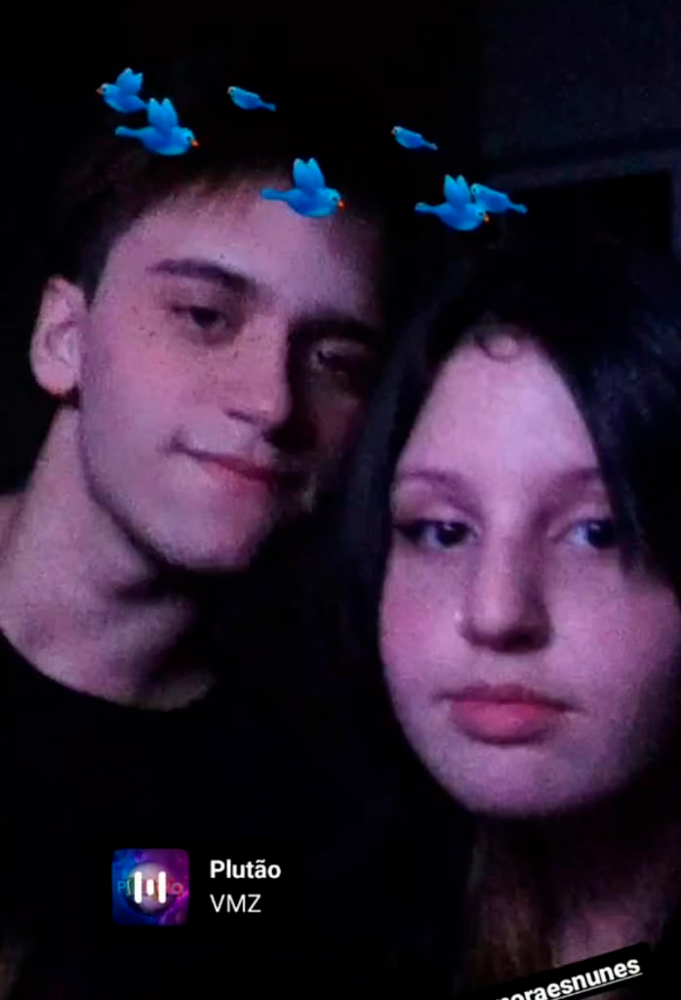
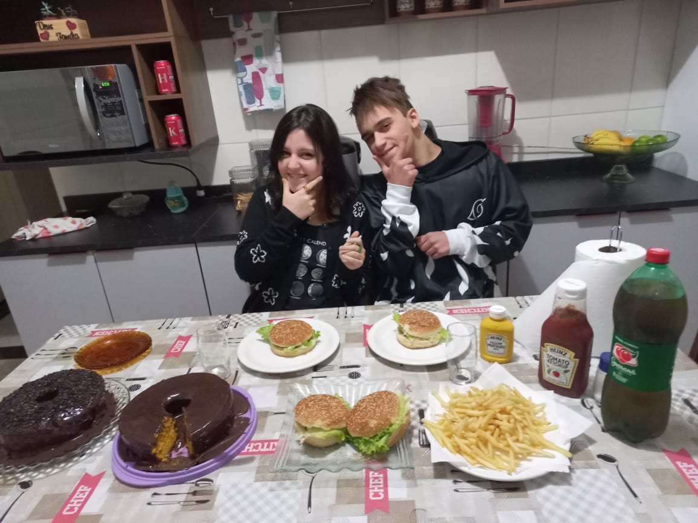

O INICIO DE TUDO
Tudo começou no dia 28/01/2020, quando nosso amigo Gustavo nos convidou para ir ao aniversário dele, e por algum motivo só fomos nós dois na festa.
Foi aí que o destino mostrou que fomos feitos um para o outro, pois eu só havia conhecido ele há uma semana, e me chamou para festa de aniversário, e com uma semana de amizade eu fui, e que bom que eu fui, pois foi lá que conheci o amor da minha vida.
Naquele dia você era o par dele, mas eu não pude deixar de notar a sua deslumbrante beleza, e quando ele nos deixou sozinhos, eu fiquei nervoso, pois estava sozinho com uma gartoa bonita pela primeira vez.
E também estaria menos nervoso se você não tivesse GRITADO comigo pelo motivo que eu não estava te escutando por conta da TV alta. "13? 12!!!!!!"
Porém, aquele dia foi incrivel, eu amei ir la, e ter te conhecido foi uma coisa que mudou totalmenteminha vida, e eu não tinha a menor noção disso.
O INÍCIO DA AMIZADE
Bom, por mais que tenhamos se conhecido no inicio doano, depois disso, começou a pandemia e eu não via o porque virar teu amigo.
Porém chegou o dia 19/11/2020, o qual a menina que eu "gostava" começou a namorar o gustavo e fiquei sozinho, então fui procurar você e achei uma brecha, pois tinha seu contato da época que criamos um grupo, e comecei a puxar assunto, para virarmos amigos, e eu queria ser sua "cura gay".
E eu me lembro até hoje qual foi nosso assunto até de madrugada, puxei assuntos chiclês, mas o marco daquela noite foi a sua música favorita, quando perguntei, você mandou a seguinte abertuda do anime "Os 7 Pecados Capitais"
Conversamos até as 01 da manhã e no dia seguinte nos falamos muito, e pois mais que foram assuntos extremamnete aleatórios, como falar de shitpost e terminar a conversa falando em Nárnia, mas eu gostei muito de falar com voce por mais que você fosse extremamnete seca na época, eu criei um carinho enorme por você, isso se deve ao fato de que eu era muito carente na época, mas isso foi crucial para nós.
Dias depois eu lhe fiz uma proposta de fazermos metadinha e você me mandou uma de nanatsu no taizai, e nesse dia nós assistimos IT a Coisa até de madrugada, e foi a primeira vez que eu disse que eu te amo, e você como era fria mandou um simples e sincero emoji de sapo.
Depois disso, ficamos conversando por uns dias até que você foi para praia no natal e decidiu passar a data comemorativa com um manto da akatsuki depois de me viciar nos rap do 7 minutoz
A PRAIA
A praia é o meu arco favorito da nossa amizade, foi sua fase mais carinhosa e divertida, eu amava você daquela época, foi quando vc disse que me amava pela primeira vez, e ainda me disse que me amava infinitamente, aquilo ficou marcado na minha mente para sempre, foi um dos melhores dias da minha vida. Eu lembro de você chorando pela morte do Asuma, e me mandando varias print sobre, me dando spoiler, mas eu nem ligava, pois independente do assunto eu queria falar com você, sempre meu amor foi você.
Nós ficavamos conversando de manhã até de madrugada todos os dias, lembro de sua tia roubando seu biquíni e indo pra festa de madrugada, você falando de mim pra sua família, colando aparelho com super bonder... Dava pra ver que desde sempre você era monguinha, não é?
depois que você foi para praia, eu fui para praia e você tava na casa da Teni, mas foi meio que um "filler" na nossa amizade.
Até que chegou fevereiro de 2021, quando você decidiu criar um grupo para que eu e suas amigas decidicem sua capa de caderno, e os integrantes do grupo eram: Júlia Mendes, Mariana Maria, Ana Clara Santos e Teni, mas esse grupo foi um grande divisor de águas na nossa história.
O DIA NA SUA CASA
Bom, um lindo dia eu fui na sua casa, e eu amei, lemnro de sua mãe oferecendo sorvete, eu recusando e você dando mesmo assim.
Também quando tentamos fazer maquiagem de Hinata e Naruto e eu falhei mizeravelmente kkkkkk, mas como sempre você estava radiante
lembroquandocolocou meu óculos, me transformou em egirl...
lembro de quando briancamos de bater com o controle no joelho do outro, e adivinhar o que o outro fala sem escutar, porque assistimos um vídeo do Jean e do Luba
O INÍCIO DA DECADÊNCIA
Nessa época foi quando eu fiquei próximo a suas amigas e no início era tudo incrivél, até que sua melhor amiga deixou de ser a Mariana e se tornou Júlia Mendes, ela ia na sua casa toda semana e sempre que ela saía da sua casa você ia sempre na dela quando ela passava a semana na sua, e não vou negar, eu e a Mari, ficávamos muito mal com você, você passava o dia inteiro ausente, e não chamava eu nem ela para ir na sua casa, tanto que nessa altura do campeonato eu só tinha ido uma vez na sua casa e então chegou Maio, o mês que lançou o filme de Demon Slayer.
O CINEMA
Fomos eu, você e ela, e então eu topei, pois te amava, e queria muito te ver, então eu fui, mas foi um pequeno erro, pois lá estava sua amiga, e ela nunca escondeu sua repulsa por mim, mas eu fui, e ela ficava falando de meninos no shopping com você, e por um leve momento eu fiquei mal, mas enfim, fomos ver o filme e eu segurei sua mão e aquilo foi mágico para mim, o filme foi muito bom e ainda estava com a garota que eu amava, mas o problema ainda estava alí.
Você ficou extremamnete péssima naquela época, e começou a jogar nossa relação no lixo, foi sua pior fase, você zombava do meu carinho por você, me chamando de gado e sempre deixando explícito que eu era feio e você estava se tornando ela, não escondendo sua repulsa e etc.
Foi aí que paramos de nos falar pela primeira vez, e por mais que doesse muito eu não queria voltar a falar contigo, pois eu sabia quqe iria doer mais.
O REATAMENTO
Eu não lembro extamente o que aconteceu para voltarmos a nos falar, mas enfim reatamos e então tudo começou a florescer de novo.
Agora com um novo ciclo de amizade, João, Ana e duda, enfim voce tinha melhorado, demonstrava mais carinho, me valorizava um teco mais e foi assim por meses, ficávamos vendo filme de madrugada, e foi tudo muito bom.
O DIA NA MINHA CASA
No dia dos namorados 12/06/2021, eu chamei você para vir aqui na minha casa, porque estava extremamente caidinho por você, e queria que rolasse algo hihi...
 E então você chegou (atrasada como sempre, mas chegou) e estava tão linda que eu nem consigo decrever, sério, e então você colocou meu manto da akatsuki, e depois jogamos the sims porum tempo, jogo do Jason e etc.
Depois fizemos um banquete da vida que minha mãe nos proporcionou, naquele dia ela te amava
Comemos batata frita, dois burgão, tomamos coca cola, e depois fomos pro quarto, deitei no seu colo e ficamos vendo ycro
Depois meu pai chrgou com pizza, e comemos até dizer chega, vimos vídeos de gartic, depois escutamos kamaitachi ate umas 22hrs, que foi quando tu partiu
Depois conversei com minha mãe sobre você, que eu te amava, tava me sentindo feliz, e até chorei de felicidade aquele dia
FIM
No dia 12/08/2021, eu estava há três dias sem falar com você, e então eu decidi te mandar um textão acabando com nossa amizade para que eu não me iludisse cada dia mais.e foiuma atitude egoísta, que me arrependi 5 minutos depois.